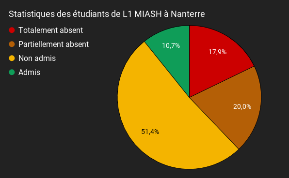
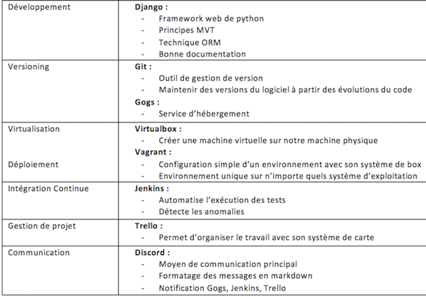
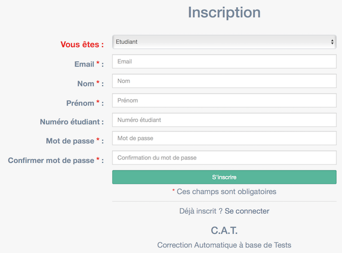
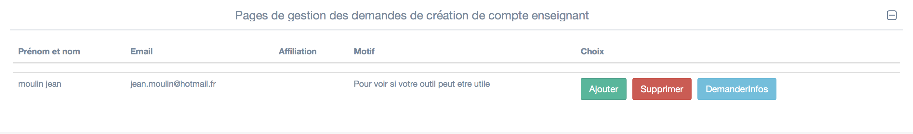

# Stage à l'université Paris Nanterre ### Correction Automatique à base de Tests <small> Par Haseeb Chaudhry </small>
# Sommaire * Présentation de C.A.T * Les outils et technologies utilisés * Le déroulement du stage * Amelioration à venir * Bilan
# Présentation de C.A.T
## Aider les étudiants 
## Pour les étudiants * Améliorer l'autonomie * Améliorer le suivi * Avoir un Contenu personnalisé en fonction du niveau * Apporter des indicateurs sur les compétences acquises
## Pour les enseignants * Correction **automatique** ou semi-automatique * Economiser du temps dans la **création** de support * Faciliter le **partage** * Archiver les supports, la correction et les dépôts étudiants * Evaluer et **certifier** le niveau d'un étudiant * Corriger en ligne
L'équipe
## L'équipe * François Delbot maître de conférences * Valentin Bouquet étudiant M2 Miage * Sang Cao Doctorant en informatique * Ludwig Simon étudiant M1 Miage * Alexandre Petit-Pas étudiant M1 Miage * Damien Jaime étudiant L3 Miage * Haseeb Chaudhry étudiant L3 Miage * Jérémy Lou étudiant L3 Miage
## Fonctionnalités * Création de supports de cours ou TD (LaTeX) * Participer à un cours ou TD * Partager les supports * Correction automatique * Tableau de bord sur les étudiants
## Outil de génération * Module python: moulinette_tools * A partir d'un fichier C génère l'ensemble des exercice et des tests pour chaque exercice * La génération se fait en analysant l'AST avec les outils de Clang
## Missions * Améliorer l'existant * Corriger les bogues * Créer des nouvelles fonctionnalités
Les outils et les technologies utilisés
## Outils et technologies 
# Les tâches accomplies
## Interface inscription 
## Validation profs 
## Tâches réalisés * Création des statistiques étudiants * Refonte de la page d'accueil profs/étudiant * Trier et sauvegarder l'ordre d'un Tableau
# Bilan
## Bilan * Maitrise difficile des langages * Difficultés à comprendre le code * Bonne préparation pour le M1 * Bonne entente avec l'équipe